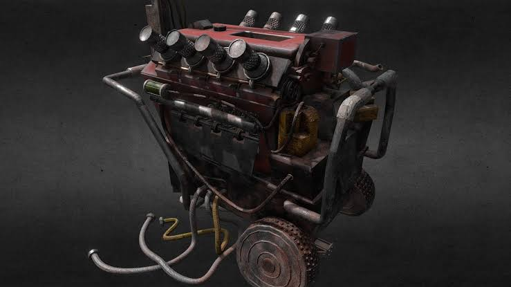
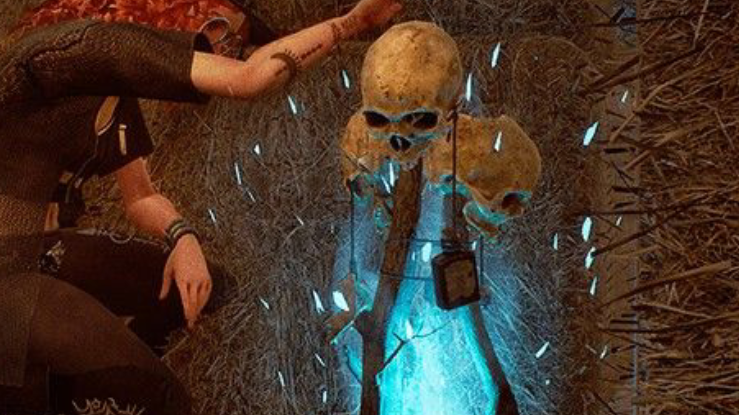
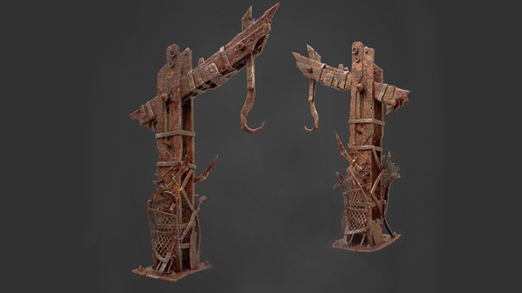
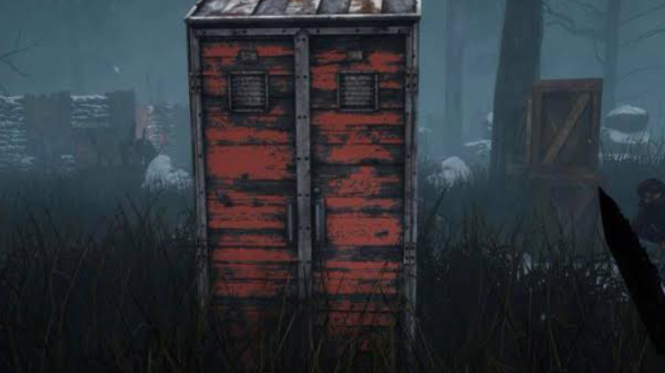

GENERATOR

Para survivor harus memperbaiki lima generator yang tersebar di sekitar peta. Setelah kelima generator tersebut berhasil diperbaiki, gerbang keluar akan aktif dan dapat dibuka, memungkinkan survivor untuk melarikan diri dari arena.
TOTEM

Ini adalah Totem yang diimbuhi kekuatan oleh Perks. Jika Totem ada di peta, maka efek Perk akan aktif dan bisa memberikan keuntungan besar bagi Killer. Jika Survivor menghancurkan Totem, maka efek Perk akan hilang, mengurangi kekuatan Killer.
HOOK

Setelah killer menangkap survivor, mereka bisa menggantungnya di hook. Survivor yang digantung akan berada dalam fase pertama atau kedua dari proses eksekusi. Jika survivor tidak diselamatkan dalam waktu tertentu atau digantung lebih dari dua kali, mereka akan tereliminasi dari permainan.
LOCKER

Survivor dapat masuk ke dalam Locker untuk bersembunyi dari Killer, terutama jika Killer sedang mengejar mereka. Namun, Killer dapat membuka Locker dan langsung menangkap Survivor jika mereka bersembunyi di dalamnya.